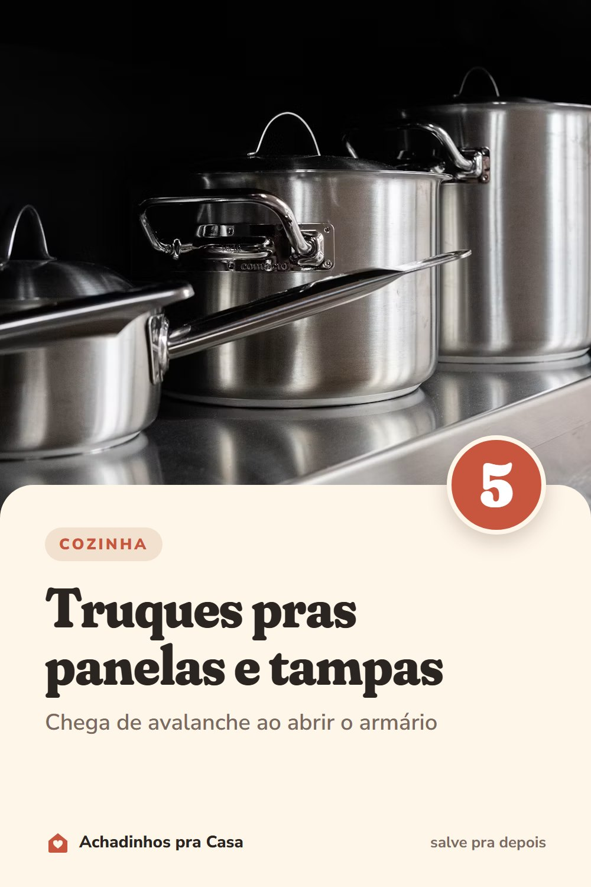

Cozinha
Panelas e tampas organizadas: 5 truques
Chega de avalanche ao abrir o armário.
- Empilhe por tamanhoDa maior para a menor, uma dentro da outra.
- Tampas em péUm porta-tampas ou um suporte de pratos segura as tampas na vertical.
- Proteja as antiaderentesUm pano ou feltro entre elas evita riscos.
- Formas e assadeiras num divisorEm pé, você tira uma sem desmontar a pilha.
- Menos é maisDoe as panelas repetidas que ninguém usa.